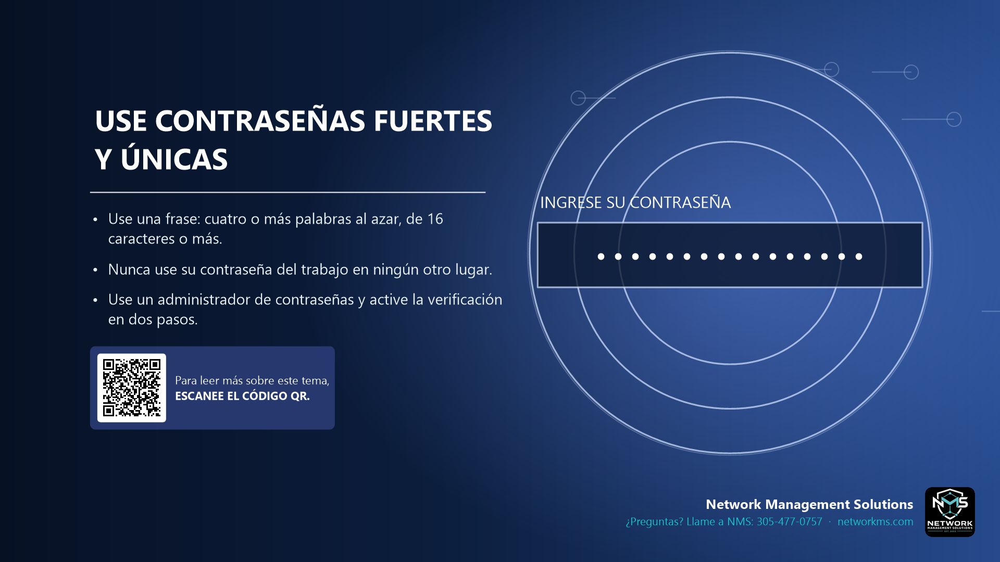

Use contraseñas fuertes y únicas

- Use una frase: cuatro o más palabras al azar, de 16 caracteres o más.
- Nunca use su contraseña del trabajo en ningún otro lugar.
- Use un administrador de contraseñas y active la verificación en dos pasos.
Las frases largas son más fáciles de recordar y más difíciles de descifrar que las contraseñas cortas y complicadas. La idea: cuatro palabras sin relación con un número o un símbolo.
Cuando hackean un sitio web, los delincuentes prueban el mismo correo y contraseña en otros sitios. Una contraseña distinta para cada cuenta lo evita.
Un administrador de contraseñas las recuerda por usted. La verificación en dos pasos agrega un segundo candado por si una contraseña se filtra.
¿Tiene dudas sobre un correo, mensaje o llamada? Llame a NMS antes de hacer clic: 305-477-0757 · networkms.com